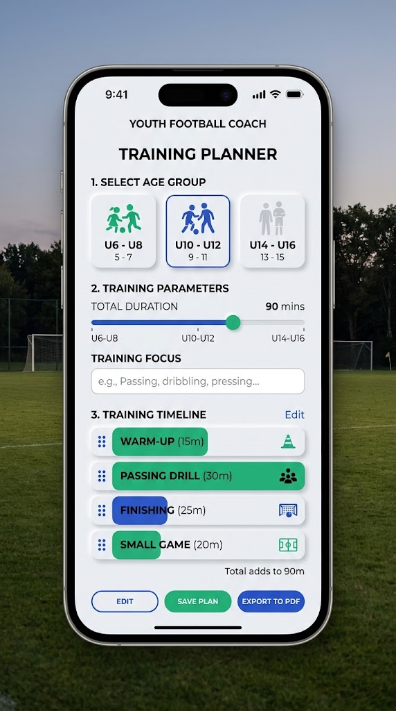
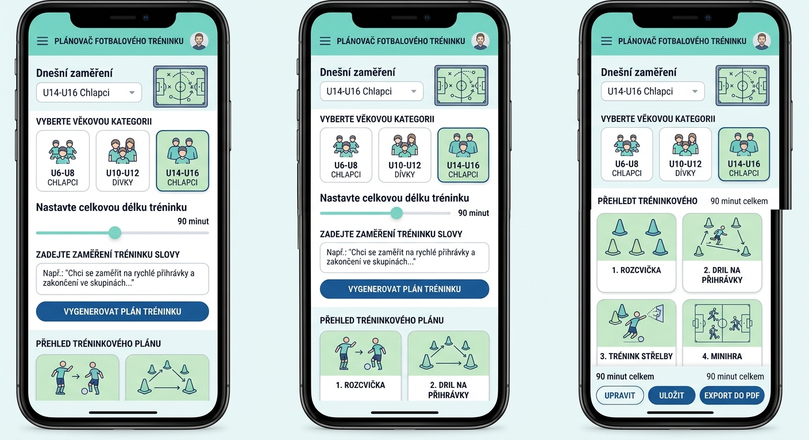

V testování — Zkoušejí to první uživatelé. Napište na redapps.support@gmail.com, jestli chcete vědět, až to bude.
Appka poskládá trénink za vás
Zadáte věkovou kategorii, délku a na co se chcete zaměřit — generátor vybere cvičení z knihovny a poskládá časový plán, který si pak můžete upravit.
Živý průvodce přímo na hřišti
Odpočet jednotlivých fází vydrží i uspání telefonu v kapse. Trénink stačí spustit a appka provede od rozcvičky po závěr.
Appka zůstává jen ve vašem telefonu
Žádný účet, žádný server. Trenéři si mezi sebou tréninky sdílejí prostým souborem, appka sama nic nikam neposílá.
Co aplikace umí
- Automatický generátor tréninku — podle věkové kategorie, délky a zaměření sestaví kompletní plán z knihovny cvičení
- Knihovna 88 cvičení pro čtyři věkové kategorie — rozcvička, technika, střelba, herní forma i závěr
- Ke každému cvičení popis provedení, lehčí i těžší varianta, potřebné pomůcky a doporučený počet dětí
- Generátor nikdy nezopakuje stejné cvičení a vždy zařadí herní část
- Automatické zařazení krátkého odpočinku mezi fyzicky náročná cvičení, aby se trénink vešel do zadané délky
- Rozpis času tréninku na cvičení, přípravu, přesuny i odpočinek — ne jen jedno souhrnné číslo
- Živý režim přímo na hřišti — odpočet času pro každou fázi s upozorněním na přechod k dalšímu cvičení
- Ovládací lišta se Start/Pauza/Konec vždy na dosah, i uvnitř detailu cvičení
- Barevně odlišené ovládání (zelená/žlutá/červená) — srozumitelné na první pohled
- Odpočet ve živém režimu běží spolehlivě, i když telefon na chvíli usne v kapse
- Kalendář tréninků se státními svátky a školními prázdninami
- Uložené tréninky s náhledem detailu přes kalendář
- Export tréninku do PDF — titulní přehled, časová osa fází a podrobné karty cvičení k tisku
- Sdílení tréninků a cvičení mezi trenéry souborem, bez internetu a bez účtu
- Nastavení klubu — vlastní název, logo a barevná paleta
- Panel Tipy pro trenéry — jak děti motivovat, chválit a citlivě reagovat na zlobení
- Appka funguje kompletně offline na iPhonu i Androidu — žádný server, žádný účet, data zůstávají v telefonu
Jak to vypadá


Bezpečnost a soukromí
Aplikace nesbírá data uživatelů. Neprovozujeme server, nemáme k vašim datům přístup a nedržíme si žádnou kopii. Žádná analytika, žádná reklama, žádné knihovny třetích stran, žádná registrace.
iOS a Android · appka pracuje offline, bez připojení k internetu